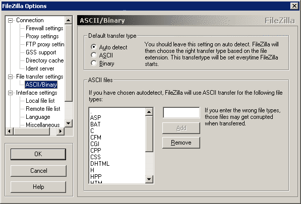

ASCII/Binary
Overview
Especially when an FTP server uses a different operating system than you, you may need to use different transfer modes for different file types. By default, FileZilla tries to detect the file type and selects a transfer mode. This page allows you to control the transfer mode selection.

| Default transfer type | - | Leave this setting on Auto detect, unless you want to force FileZilla to use a specific mode for every transfer, which is not recommended. |
| ASCII files | - | When you've chosen Auto detect, FileZilla chooses ASCII mode for all file types which are in the list. To add a new file type, enter the file extension into the edit field and click on Add; to remove a file type, select it from the list and click on Remove. |
Warning: If the wrong file types are in the list or if you've selected a transfer type other than Auto Detect, file transfers may result in corrupt files.